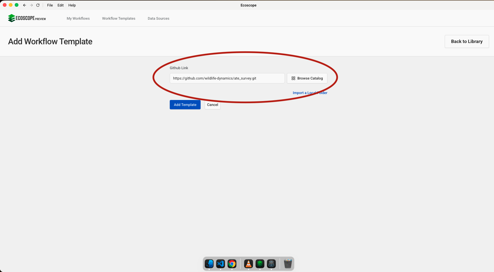
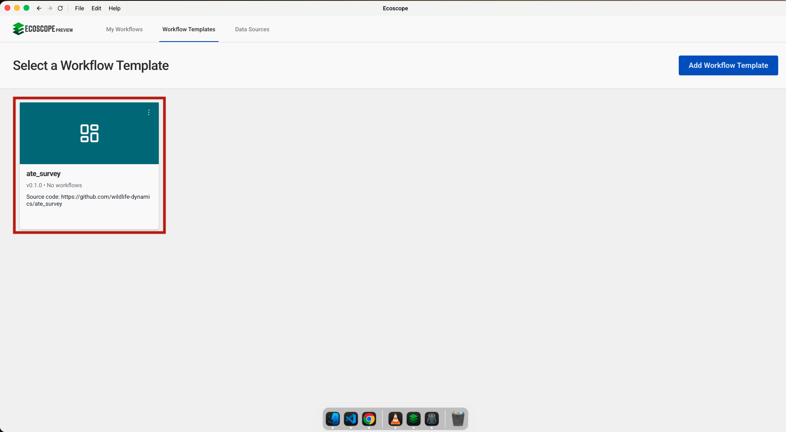
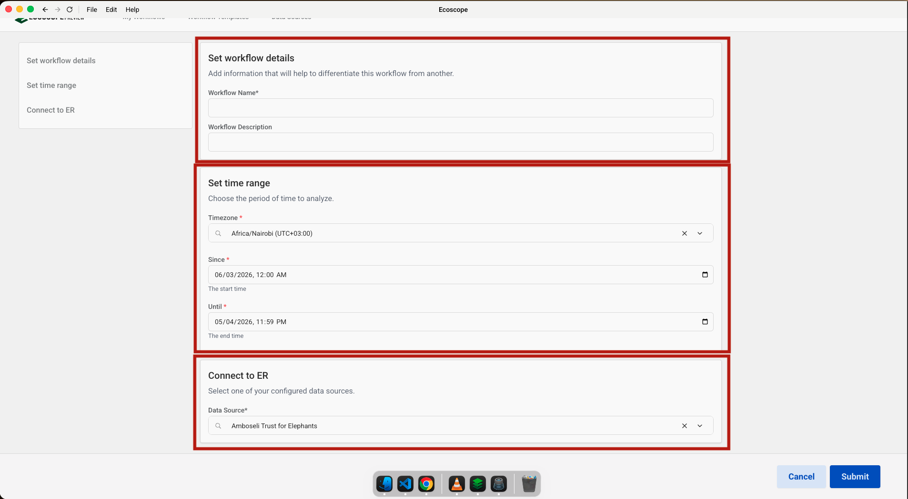

User Guide
This guide walks you through configuring and running the ATE Social Survey workflow (social_survey). The workflow turns Amboseli Trust for Elephants community questionnaire responses from EarthRanger into a dashboard, sentiment analysis, maps, and a Word report.
Overview
The workflow delivers, for a single combined analysis (there is no per-group breakdown):
- An interactive dashboard with 53 widgets (50 charts and 3 maps)
- 11 pie charts and 27 bar charts covering demographics, livestock and land, behaviour, and elephant knowledge
- A Likert chart of 9 agree/disagree attitude statements
- An elephant sentiment score for every respondent, with boxplots, Tukey HSD plots, and scatter plots with an OLS trendline across demographic groups
- 3 maps of Amboseli: survey locations, respondent gender, and attitude category
- A Word report,
social_survey_report.docx
Prerequisites
- Access to an EarthRanger instance with
atequestionnaire_repevents recorded within the analysis period - Internet access from the runner. Three Amboseli GeoPackages and the Word template are downloaded from Dropbox during the run, and base map tiles are loaded from ArcGIS Online
1. Add the Workflow Template
In the workflow runner, go to Workflow Templates and click Add Workflow Template. Paste this repository's URL into the Github Link field, then click Add Template:
https://github.com/wildlife-dynamics/ate-social-survey.git
The card may show "Initializing…" briefly while the environment is set up.
2. Add an EarthRanger Connection
Navigate to Data Sources, click Connect, and select EarthRanger. Fill in:
- Data Source Name: a label for this connection (e.g.
Amboseli Trust for Elephants) - EarthRanger URL: your instance URL (e.g.
your-site.pamdas.org) - EarthRanger Username and Password
Credentials are not validated at setup time. Authentication errors appear only when the workflow runs.

3. Select the Workflow
Once added, the template appears in the Workflow Templates list. Click the card to open the configuration form.

4. Configure the Workflow Form
The form has three sections on a single page. Base maps, map layers, grouping, and the report template are fixed in the workflow, so they don't appear here.
Workflow Details
| Field | Description |
|---|---|
| Workflow Name | A short name to identify this run (required) |
| Workflow Description | Optional notes (e.g. survey round or site) |
Time Range
| Field | Description |
|---|---|
| Since | Start of the analysis period. All atequestionnaire_rep events from this point are fetched |
| Until | End of the analysis period |
| Timezone | Local timezone (e.g. Africa/Nairobi UTC+03:00) |
| Time Format Advanced | How dates are written in the report period (default %d %b %Y %H:%M:%S) |
Connect to EarthRanger
Select the data source configured in Step 2 from the Data Source dropdown.

5. Run
Once all sections are filled in, click Submit. The runner will:
- Download three Amboseli GeoPackages from Dropbox (land-use zones and conservancies, group-ranch boundaries with the electric fence, and group-ranch boundaries), reproject them to EPSG:4326, and style them as map layers.
- Fetch
atequestionnaire_repevents for the time range (raise_on_empty: true, so the run fails if none are found). - Expand the event details into columns and strip the Maa translations from question headings (e.g. What is your Age? (Kaja larin liata?) becomes What is your Age).
- Exclude invalid records: serial number
46283, respondents aged 18 or under, and single-person households. - Fill missing values (
0for numeric answers,No Responsefor text) and convert numeric columns to integers. - Map raw answers to clean labels (Yes/No, True/False, Agree/Disagree, gender, age group, education, feelings about wildlife, how often elephants are seen, marital status).
- Draw 11 pie charts. Group numeric answers into 5 natural-breaks bins and draw 9 bar charts, then draw 10 Yes/No and 8 True/False bar charts.
- Build the demographic summary table (gender, age, tribe, household size, education).
- Draw the Likert chart and score each respondent's sentiment. Each of the 9 statements scores 1–5 with negative statements reversed; the mean is then put into 5 categories from Strongly Disagree to Strongly Agree.
- Draw boxplots, Tukey HSD plots (with
No Responseexcluded), and scatter plots with an OLS trendline of sentiment across demographic groups. - Render the 3 maps and convert all 50 charts and 3 maps to PNG.
- Download the Word template and fill it with the PNGs, the demographic table, and the report period.
- Assemble the dashboard and write everything to
ECOSCOPE_WORKFLOWS_RESULTS.
Output Files
All outputs are written to $ECOSCOPE_WORKFLOWS_RESULTS/. Every chart and map is saved as .html plus a .png with the same name.
Data & Report
| File | Description |
|---|---|
survey-events.gpkg | Cleaned survey responses, one point per respondent |
demographic-data.parquet | Demographic summary table (also used in the Word report) |
elephant-sentiment-table.gpkg | Statement scores, sentiment_score, sentiment_score_mean, and sentiment_bins |
social_survey_report.docx | Final Word report |
Pie Charts (11)
| File | Question |
|---|---|
what_is_your_age_group_pie_chart | Age group |
what_is_the_land_arrangement_pie_chart | Arrangement for the land farmed on |
highest_level_of_education_pie_chart | Highest completed education |
what_is_your_tribe_pie_chart | Tribe |
greatest_threat_to_crop_production_pie_chart | Greatest threat to crop production |
greatest_threat_to_livestock_pie_chart | Greatest threat to livestock |
what_is_your_marital_status_pie_chart | Marital status |
overall_feeling_about_wildlife_pie_chart | Overall feelings about wildlife |
how_often_have_you_seen_elephants_in_the_last_year_pie_chart | How often elephants were seen in the last year |
how_do_you_feel_witnessing_elephant_harmed_pie_chart | Feeling on hearing of or witnessing an elephant speared/poisoned |
gender_of_participant_pie_chart | Gender |
Bar Charts: Binned Numeric Answers (9)
age_bins_bar_chart, other_people_bins_bar_chart (household size), cattle_bins_bar_chart, dog_bins_bar_chart, donkey_bins_bar_chart, sheep_goats_bins_bar_chart, other_animal_bins_bar_chart, land_grown_crops_bins_bar_chart, land_owned_bins_bar_chart. Households with zero dogs or zero donkeys are left out of those two charts.
Bar Charts: Yes/No Questions (10)
| File | Question |
|---|---|
do_you_benefit_from_electric_fence_bar_chart | Benefit from the KCCDT Big Life electric fence |
activities_altered_elephant_presence_bar_chart | Choose routes/schedules/water fetching based on elephant presence |
protect_water_from_elephants_bar_chart | Protect water sources from elephants |
more_eles_past_bar_chart | See more elephants now than in the past |
family_protection_eles_bar_chart | Use measures to prevent crop damage by elephants |
ffamily_protection_eles_livestock_bar_chart | Use measures to prevent injury to livestock |
illness_wild_bar_chart | Noticed signs of illness in wild animals |
elephant_harmed_bar_chart | Involved in or witnessed an elephant being harmed |
report_elephant_conflict_bar_chart | Report elephant conflict |
elephant_community_dialogue_bar_chart | Interested in a future community dialogue |
Bar Charts: True/False Knowledge Questions (8)
male_elephant_secretion_bar_chart, elephant_human_awareness_bar_chart, elephant_shake_head_bar_chart, elephant_smell_far_away_bar_chart, elephants_move_seasonally_bar_chart, female_elephants_protective_bar_chart, female_elephants_family_groups_bar_chart, witness_elephant_harm_bar_chart
Sentiment & Statistics
| File | Description |
|---|---|
ele_sentiment_chart | Likert chart of the 9 agree/disagree statements |
gender_boxplot_chart, age_group_boxplot_chart, education_level_boxplot_chart, tribe_boxplot_chart, marital_status_boxplot_chart | Sentiment distribution by group |
gender_tukey_chart, marital_status_tukey_chart, age_group_tukey_chart, education_tukey_chart | Tukey HSD pairwise comparisons (95% confidence) |
household_sentiment_scatter_chart, age_sentiment_scatter_chart | Sentiment against household size and age, with an OLS trendline |
Maps
| File | Description |
|---|---|
survey_event_map | All survey locations |
gender_event_map | Survey points coloured by gender |
sentiment_event_map | Survey points coloured by attitude category |